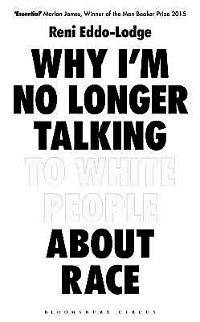

2017-11-30 08:00

I confess, I bought Reni Eddo-Lodge’s “Why I’m No Longer Talking to White People About Race” for its provocative title. As American democracy unravels and the ugly white supremacy it was all built on emerges like Dorian Gray’s portrait, I have noticed many black Americans simply giving up on white Americans. Sadly, that includes me. Fortunately, and despite the title of her book, Eddo-Lodge has kept talking about race — to whites and blacks alike.
The book offers reader a great overview of British race problems — which are, not surprisingly, much like our own in America. Police killings, redlining, civil rights abuses, organized racists and nationalists, disappointing liberals — race in Britain could be a parallel universe, though it has its own features. Second, this is a book by a black British feminist, which offers us a view of the intersection between race and gender. And as a second-generation Briton, Eddo-Lodge also discusses how class and wealth intersect as well.
Eddo-Lodge has a wonderful chapter that differentiates structural racism from raw bigotry, and she takes an effective stab at white privilege and the notion of so-called “reverse racism.” In another chapter she interviews far-right BNP leader Nick Griffin. In another she describes how feminism was a gateway to her understanding of race. And she has much to say about white feminists.
One of the best lines in the book comes from the ending of the chapter “Fear of a Black Planet”:
“The paradox, of course, is that those who oppose anti-racism have worked themselves into quite the double-bind. It’s a bit of a Schroedinger’s cat situation. If, as they say, racism doesn’t exist, and black people have nothing to complain about, why are they so afraid of white people becoming the new minority?”
“Why I’m No Longer Talking to White People About Race” is filled with statistics, polls, case studies, and individual stories; and it ends with thirteen pages of footnotes. But not before offering readers suggestions on fighting racism — or staying sane while surviving it.